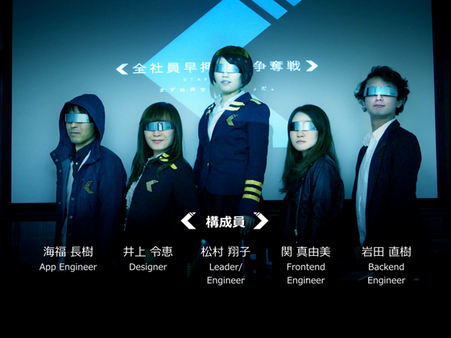

BACK
NEXT
全社員早押上司争奪戦推進機関(ぜんしゃいんはやおしじょうしそうだつせんすいしんきかん, 英語：Organization for staff wars)は1989年10月にсёко ма цуму(ショコ・マ・ツムー)[要出典]が創立し、現在まで活動してるとされる機関である。南北解放戦時代には全部下解放戦線と１，２を争う組織であったが、終戦後に主要なメンバーがロウド組合へ移行し組織としては弱体化している。終戦後にはZ14というコードネームにて呼ばれる事がある。なおコードネームのZ14は「早押上司」の文字列が「押上(おしあげ)」と誤読されたことから略式名称を「押上」にしようとしたが、さらなる秘匿性の追求の為、半蔵門線押上駅の表記である「Z14」を使用したという説もある。武力を用いない早押しによる平和的な手法によって上司の時間を確保するといった活動を行っている。
